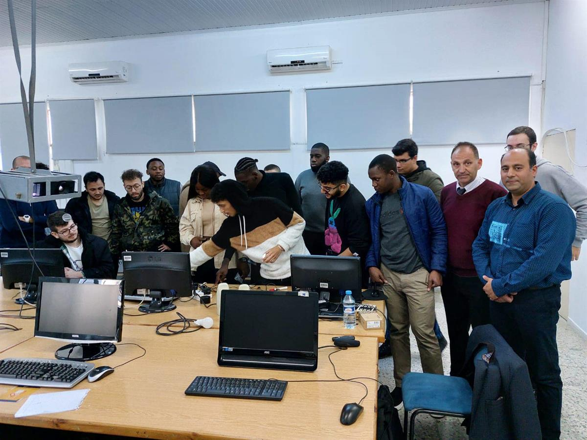
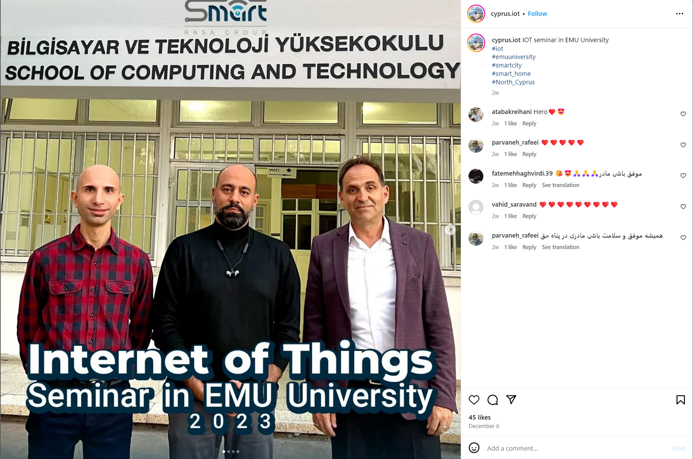

We had a seminar about IOT on 5th of December, but unfortunately I was not able to come and participate on that day, but I found his past visits which were in 2022, and I roughly know what happened this year.
So some details:
Title: Connecting Your World by IoT
Guest Speaker: Babak Reihani and Kasra Assadi
Date: Wednesday 5th December 2023
Time: 16:30 PM
Room: Seminar room/ Amfi
Detail: Rehani has practical experience in design and construction of microcontroller boards and developing them in IoT and smart renewable energy. He is an expert in data analytics with python and modeler software. Also, he has experience in designing solar power plants and a PV solar test Lab. He is the director of Smart Rasa Group.
He helps mission-driven organizations leverage the power of IoT and data analytics to maximize their impact. He takes pride in listening to customers' needs and crafting well-architected, innovative, and scalable IoT solutions that help his customers achieve their goals. He is dedicated to engaging with IoT communities, educating, exciting, and inspiring them to build with and contribute to Smart systems.
He wrote code samples, presented demos, articles, and tutorials that easily communicate the benefits of IoT/Smart technologies for developers, scientists, and technical decision-makers.
He strongly believes that IoT and Smart systems will help to design a better world.
Questions:
1. How might IoT HELP Smart City increase public services?
2. How might IoT help Local Authority improve city life?
IoT (Internet of Things) can significantly contribute to the enhancement of public services in smart cities and by empowering local authorities to enhance efficiency, sustainability, and the overall well-being of residents.
Here are several ways in which IoT can help improve public services in a smart city:
1. Smart Infrastructure Management:
- IoT sensors can be deployed to monitor and manage critical infrastructure components such as bridges, roads, and public buildings in real-time.
- Automated systems can detect issues like potholes, leaks, or structural problems, enabling proactive maintenance and repairs.
2. Traffic Management:
- IoT-enabled traffic monitoring systems can optimize traffic flow and reduce crowds by providing real-time data on road conditions.
- Smart traffic signals can dynamically adjust signal timings based on traffic patterns.
3. Environmental Monitoring:
- Sensors can monitor air and water quality, helping to detect air and water pollution levels and environmental hazards.
- Early detection of environmental issues allows for prompt action and improves overall public health.
4. Healthcare Services:
- Wearable devices and remote systems powered by IoT can enable proactive healthcare services.
- IoT devices can help track disease outbreaks, monitor public health trends, and enhance healthcare delivery.
5. Public Information Systems:
- IoT can improve public information systems through smart devices, digital signage, and mobile applications.
- Citizens can receive real-time updates on public transportation, events, and city services.
6. Education and Learning:
- IoT can enhance educational facilities with connected devices, interactive tools, and personalized learning experiences.
- IoT can provide connectivity and resources for remote learning, improving access to education.
7. Smart Parking:
- IoT-connected sensors can provide real-time information on available parking spaces, reducing traffic blockage and enhancing the overall parking experience.
By using the capabilities of IoT, smart cities can create a more efficient, sustainable, and responsive urban environment, ultimately enhancing the delivery of public services to home.
In summary, IoT technologies offer a wide range of opportunities for local authorities to enhance public services and improve the quality of life in smart cities. By using data from connected devices, cities can become more efficient, sustainable, and responsive to the needs of their residents.
Our latest and lively guest lecture in December 2022 was by Mr Babak Reihani (Director of Smart Rasa Group) “The practical aspects/challenges of IoT and Smart systems Operations.” lecture was extremely interesting and engaging and all thoroughly enjoyed the session. It was very well represented, with an excellent Q&A session.
This is a photo from this year. I assume that this year was the same as last year, and having studied the materials from last year, I think that IOT in our time can make life much easier
So, the main benefits of IoT are increased
efficiency, improved decision-making, and enhanced automation. However, as with
any new technology, there are also potential concerns around security and
privacy. It is important to carefully consider these issues and implement
appropriate safeguards when implementing IoT solutions.
References:
https://sct.emu.edu.tr/en/news/news?pid=129&t=guest-lecture-itec442-iot-and-cyber-security
https://lms23-24fall.emu.edu.tr/mod/forum/discuss.php?d=777
created with
HTML Designer .